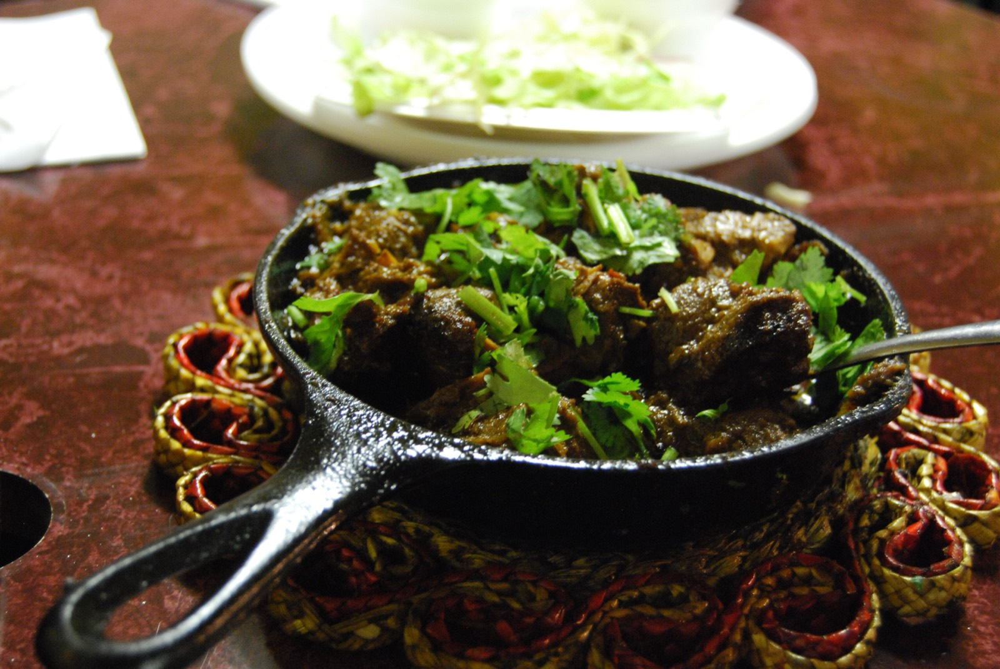
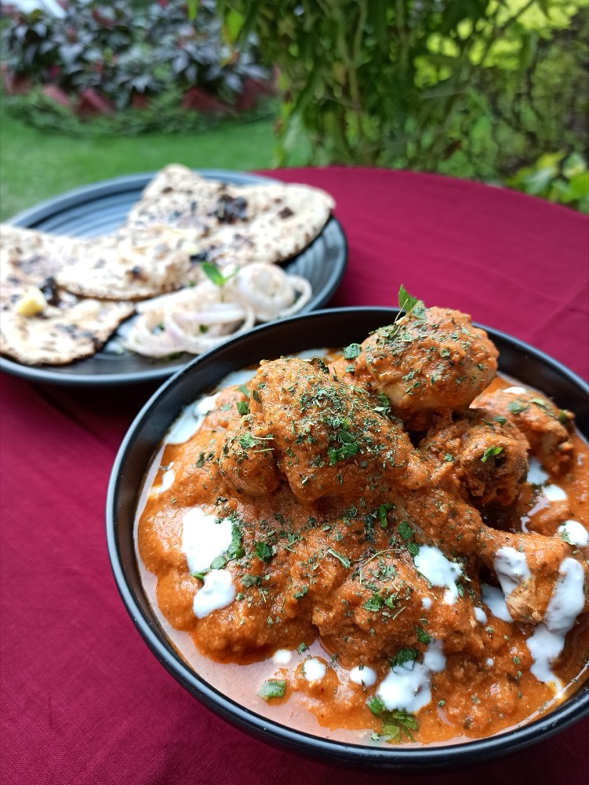
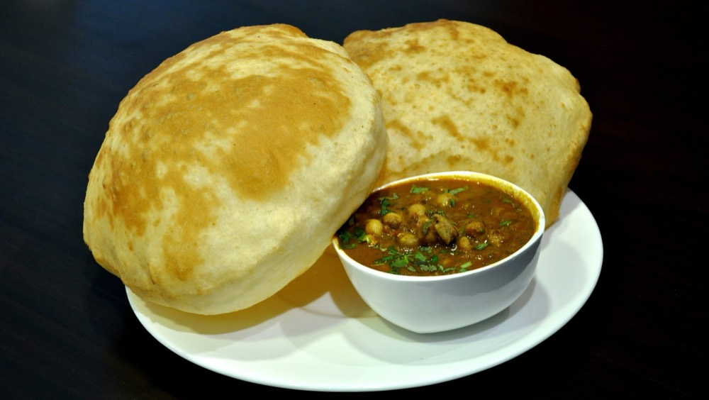

Tandoors, wheat, and dairy, plus the refugee kitchens of 1947 that turned Punjabi food into India's most recognized export.
Punjab takes its name from panj āb (five rivers), and that geography built the cuisine long before any dynasty or border did. The Indus plain is some of the most fertile farmland in South Asia, and for centuries it has produced wheat rather than rice as its staple grain, along with the dairy that comes naturally with extensive cattle and buffalo farming. Roti, paratha, naan, ghee, makkhan (butter), lassi, paneer. The core of Punjabi cooking is really the core of Punjabi agriculture.
The tandoor, the clay oven now inseparable from Punjabi food, isn't originally Punjabi at all. It arrived with Central Asian and Mughal influence, likely by the 16th century. What Punjab did was make it central. Tandoori roti, naan, and tandoor-roasted meats became the backbone of a cooking style built around live fire and dairy-based marinades.
The single biggest turning point in Punjabi cuisine's history isn't ancient. It's 1947. Partition displaced millions of Punjabis from what became West Punjab, Pakistan, and a large number resettled in Delhi. Among them were restaurateurs who rebuilt their trade from scratch, and it's this generation that is widely credited with inventing what most of the world now thinks of as "Indian food."
Butter chicken is the clearest example. The story, credited to Kundan Lal Gujral of Delhi's Moti Mahal restaurant, is that leftover tandoori chicken was simmered in a tomato-butter gravy to keep it from drying out. That practical fix became a signature dish. Dal makhani, black lentils finished the same way with butter and cream, followed the same logic. Both dishes are, in culinary-history terms, remarkably recent. They're refugee-kitchen inventions from the late 1940s that went on to define an entire cuisine's global reputation.
It's worth separating the two Punjabi cuisines that coexist today. One is the everyday rural table. Sarson da saag (mustard greens, slow-cooked with spices) eaten with makki di roti (cornmeal flatbread), along with simple dals, buttermilk, and pickles, food built for farming families and cold Punjab winters. The other is the richer, dairy-heavy restaurant repertoire of butter chicken, dal makhani, and paneer dishes, built for the diaspora and now exported worldwide. Both are authentically Punjabi. They just come from different centuries and different kitchens.


Tell us what is in your kitchen, and Khaana will help you cook an authentic Indian meal.